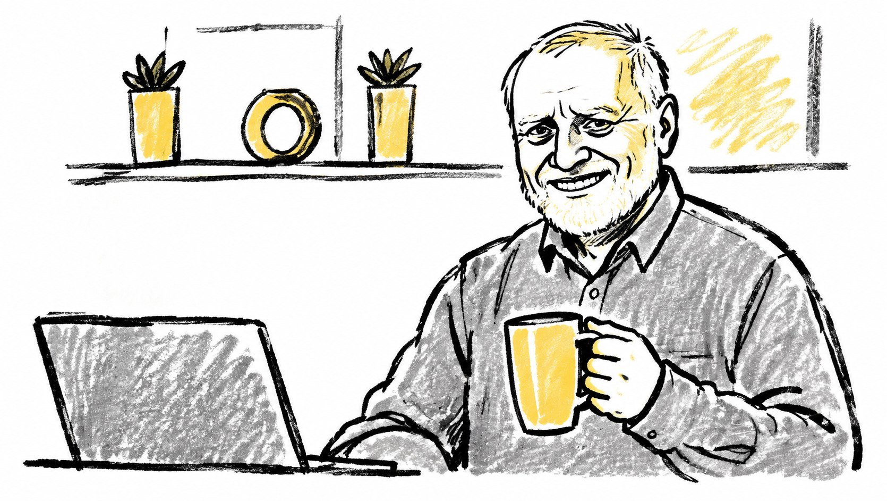
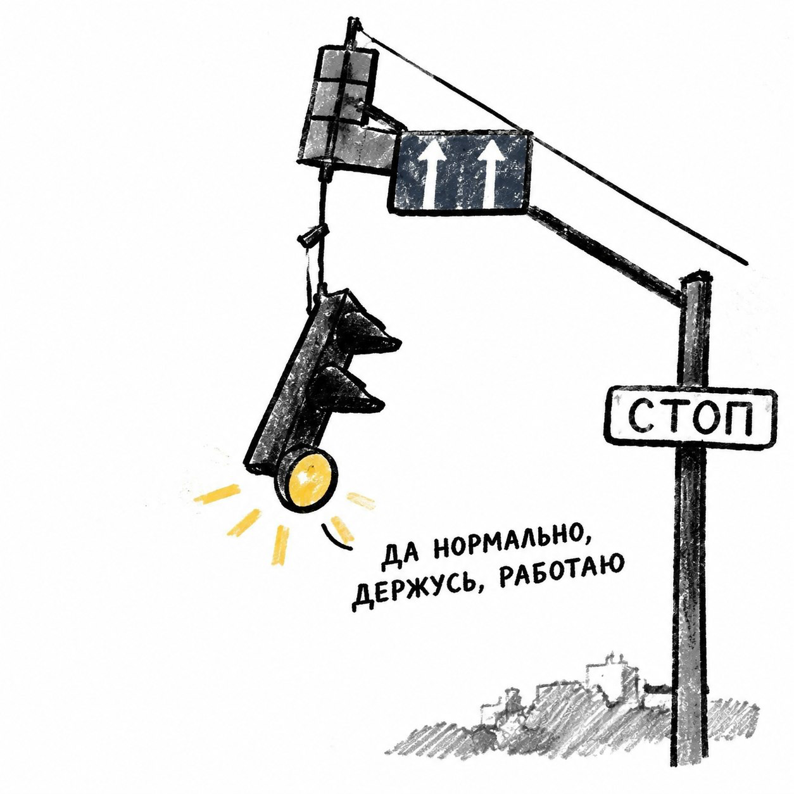
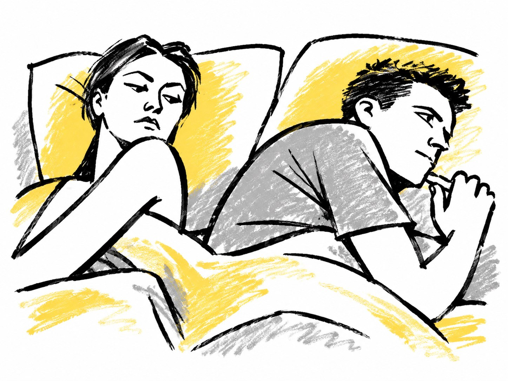

От автора
Я делал это исследование для себя, в рамках большой работы, и не планировал им делиться. Но оно показалось мне познавательным и доступным для осмысления, поэтому немного оформил его и выкладываю.
Я делал его, естественно, с помощью нейронок — естественно, потому что пока не обладаю достаточными компетенциями и знаниями, чтобы написать такое самостоятельно.
Собственно, в этом и состоит цель (пожалуй, любого) исследования: расширить поле собственного незнания.
С другой стороны, раз уж нам не отвертеться от ИИ, то стоит научиться им пользоваться во благо хотя бы одному живому существу.
Прежде чем отпустить вас читать, считаю важным напомнить ряд правил, которые стоит держать в голове:
1) Материал, полученный от нейронки, требует обязательной верификации, и ни в коем случае не должен быть принят на веру.
Если проще, то в тексте точно есть фактические и смысловые ошибки. Часть из них я нашел и исправил, остальные же требуют глубокого изучения. С другой стороны, если бы я мог верифицировать все написанное, это было бы уже не исследование.
2) Материал, собранный и синтезированный здесь — это лишь одна оптика одного человека (меня). Он однозначно неполный и может и должен быть дополнен. Его главная ценность, как я уже говорил, поставить перед читателем вопросы и дать пищу для рефлексии.
3) Нейронка пишет всегда очень «густой» текст. И несмотря на то, что я изрядно его проредактировал, стоит удерживать себя от пробегания глазами — это лишит вас (почти) всей возможной пользы от изучения.
Предисловие (тоже от автора)
Я не умею по-научному, поэтому просто попробую рассказать, о чем здесь речь.
С одной стороны, жизнь идет как идет, другой мы не знаем, и надо ее как-то жить. С другой — что-то как будто не так. И пусть другой мы не знаем, а знаем ли эту? И насколько хорошо? Возможно, если ее получше узнать, оказаться ближе к реальности, то и жить получится более качественно?
Мы наблюдаем много проблем, которых с легкой руки можно назвать распадом отношений. Это не совсем верно, потому что (особенно по Ульриху Беку) происходит скорее переосмысление и переструктурирование — но для захода в травму, как я думаю, сойдет. Тем более, что новые структуры нам либо неизвестны, либо неприятны, либо, может и вредны.
В любом случае, мы видим факты: геополитика сломалась, семья обесценилась, живой контакт упирается в непреодолимый барьер психики. И везде про недостаток доверия, контакта, терпения. Что это — болезнь, слабость, избалованность, неизбежность? И кто виноват — родители, культура, прогресс, общество, просвещение, соцсети?
Исследование запустила услышанная идея о том, что мы все сегодня в той или иной мере являемся «носителями» хронического ПТСР. Я про это знал очень мало, какие-то истории ветеранов Ирака и их психологов, не более. В жизни видел состояние близких после первых ранений первых лет СВО.
Но по себе вижу, что ряд симптомов, особенно эмоциональная отстраненность, неприятие себя, отсутствие образа будущего — налицо и на месте. Значит, есть, о чем подумать.
Вот и захотел разобраться, поискать, что об этом говорят врачи, социологи, психологические школы и всякие мыслители. В исследовании есть и выводы да гипотезы, но напомню: нейронка дает исключительно усредненные «мысли» (в данном случае скорее скопированные из таких же сгенерированных отчетов о трендах условной большой четверки), поэтому опираться на них советую с очень большой осторожностью.
А теперь желаю всем красивого познания и добро пожаловать в собственно материал.
Сводка исследования
Главный вывод. Данные клинической эпидемиологии не подтверждают представление о массовой хронической травматизации: пожизненная распространённость ПТСР составляет единицы процентов населения, а хроническое расстройство после травматического события развивается примерно у одного из десяти переживших.
Подтверждается феномен иного порядка — массовый хронический дистресс с травматической структурой: нарушенное базовое доверие к миру, гипербдительность, разрыв устойчивых связей, невозможность планировать будущее. Это состояние воспроизводится устройством общества и зафиксировано не опросами, а твёрдыми показателями — динамикой смертности, продаж лекарств, демографией, распространённостью одиночества.
Две проверки ограничивают и эту картину. Культурная социология показывает, что сам нарратив о всеобщей травмированности частично производит описываемое им состояние. Исследования резилентности показывают, что устойчивое функционирование после травматических событий является статистической нормой, а хроническое расстройство — исключением.
1. Как читать эту справку
Слово «ПТСР» живёт в двух разных пластах, и почти все разногласия в теме — разногласия о том, к какому пласту отнести слово.
Линза А — клиническая. ПТСР и комплексное ПТСР (cPTSD, 6B41 в МКБ-11) — диагнозы с критериями: травматическое событие (угроза жизни/целостности), симптомы вторжения, избегания, гипервозбуждения; у cPTSD дополнительно нарушения самоорганизации (дисрегуляция аффекта, негативный самообраз, нарушения отношений). Единица измерения — индивид, инструмент — диагностическое интервью. DSM-5 отдельный cPTSD не ввёл (конструкт считался недостаточно валидированным), МКБ-11 ввела.
Линза Б — культурно-критическая. «Травмированное общество», «травма эпохи» — аналитическая рамка, применяющая клинический словарь к социальным структурам и массовым состояниям: Габор Мате («травма — не то, что с тобой случилось, а то, что случилось внутри тебя»), ван дер Колк, Герман, Хан (альтернативный диагноз: не травма, а истощение), социологи — Бек, Бауман, Гидденс, Александер. Единица — общество или культура; инструмент — интерпретация, не шкала.
Линза В — школы психологии. Психоанализ, теория привязанности, КПТ и травма-фокусные методы, соматика и нейробиология, экзистенциальная школа, посттравматический рост, травма-информированный подход. Каждая объясняет, как травма становится хронической без единичного события, — и каждая по-своему отвечает на вопрос о массовости.
Линза Г — «вы не правы». Четвёртая оптика отрицает саму постановку вопроса: научная программа резилентности (большинство переживает травму без хронических последствий), философия страдания (Ницше, стоики, Франкл, Талеб), позитивная психология и «вакцина стресса». Не критика травма-дискурса, а позитивная альтернатива — тоже со своей критикой.
Методологическое правило: цифры линзы А нельзя использовать как аргументы линзы Б и наоборот. Смешение — самая частая ошибка в публицистике по теме. Далее обе линзы разобраны раздельно, синтез — в разделе 9.

2. Линза А: что показывает клиника и эпидемиология
2.1. Рамки и расхождение систем
Сегодня действуют две системы постановки диагноза, и они считают по-разному. Американская DSM-5 считает широко: 20 симптомов в четырёх группах, а отдельного «сложного» ПТСР в ней нет. Международная МКБ-11 (Всемирная организация здравоохранения) считает уже: базовое ПТСР — шесть симптомов, всё «сложное» вынесено в отдельный диагноз cPTSD, где к обычным симптомам добавляются три признака — человек не справляется с эмоциями, плохо думает о себе и не может выстроить близкие отношения. Практическое следствие: один и тот же человек по американской системе получит диагноз «ПТСР», а по международной — «комплексное ПТСР», поэтому цифры из разных стран напрямую сравнивать нельзя.
2.2. Распространённость — диагностические оценки
| Регион / группа | Пожизненная ПТСР | Источник |
|---|---|---|
| США (NCS-R, DSM-IV) | 6,8% (жен. 9,7% / муж. 3,6%) | NIMH |
| Мир, 26 стран (WMH) | 3,9% (5,6% среди переживших травму) | Koenen et al., 2017 |
| Европа (ESEMeD) | 1,9% | Darves-Bornoz et al., 2008 |
| cPTSD, мирные развитые страны | ~4% (самоотчёт ITQ) | метаанализ Hyland et al., 2025 |
| cPTSD, страны с войной | ~15% (самоотчёт ITQ) | там же |
| Украина, гражданские, 2023–24 | 31,2% PTSD/cPTSD (скрининг) | KCL/EJPT |
| Украина, военные, клин. оценка | 67,4% PTSD+cPTSD | UNITY, 2023–24 |
| Беженцы (только клин. интервью) | 31,5% | Blackmore et al., 2020 |
| Ветераны Ирака | 12,9% | Fulton et al., 2015 |
Три оговорки, без которых эти цифры читать нельзя. Во-первых, «горячие» цифры пандемии и войны собраны опросниками-скринингами: человек сам отмечает свои симптомы по списку, без врача. Такие опросники завышают распространённость в полтора–три раза по сравнению с полноценной диагностикой. Во-вторых, свежих больших диагностических опросов после 2020 года в США и Европе не проводили — базовые цифры относятся к 2001–2013 годам. В-третьих, по России национальной статистики ПТСР просто нет: в методических текстах встречается разброс 2,6–12%, оценки по участникам СВО (3–11%, «20% вернувшихся») — вторичные политизированные заявления без прозрачной методики, а из независимых измерений есть лишь точечное исследование (Нижний Новгород: ПТСР у 5,2% переживших угрозу жизни).
2.3. Дискуссия об инфляции диагноза
- Allan Young («The Harmony of Illusions», 1995): ПТСР не открыт, а сконструирован — продукт антивоенной коалиции психиатров и ветеранских организаций после Вьетнама, системы компенсаций и обратной связи «врач–пациент».
- Критика критерия А (Rosen, McNally, Spitzer): критерий травмы «ни необходим, ни достаточен» — симптомы набираются и после развода, утраты, расставания; диагноз размерный, а не категориальный; «телевизионное ПТСР» после 9/11 — пример концептуальной цикличности.
- МКБ-11 фактически ответила на эту критику сужением PTSD и выносом «сложных» случаев в cPTSD.
Вывод этой линии: в строгом клиническом смысле «хронические ПТСР-щики» — это значимое меньшинство: единицы процентов населения за жизнь. При этом болезнь тяжёлая и почти никогда не приходит одна — к ней присоединяются депрессия, зависимости, суицидальные мысли (по данным NCS-R, ПТСР повышает риск попытки суицида примерно в шесть раз). Эпидемии ПТСР как массового свойства всего населения мирных стран клиника не подтверждает. Что подтверждает — резкий рост числа людей, столкнувшихся с травмой, и рост выявляемой симптоматики в зонах войны, среди медиков, беженцев и ветеранов.
3. Линза Б: мыслители и карта разногласий
3.1. Полюс «да, почти все травмированы»
-
Габор Мате («The Myth of Normal», 2022). Канадский врач, десятилетиями работавший с зависимыми. Его главный ход — переопределить травму: это не то, что с тобой случилось, а то, что случилось внутри тебя. Поэтому травма не требует катастрофы: ребёнок, чьи эмоциональные потребности систематически не замечали вполне любящей семьёй, травмируется так же, просто незаметно — Мате называет это «травмой малой буквы». Отсюда его вывод: травмированность — не исключение, а статистическая норма общества, а зависимости, депрессия и болезни — нормальные ответы психики на ненормальную культуру. Цена хода — критика: если травмой считается всё угодно, понятие перестаёт проверяться (см. 4.2).
-
Бессел ван дер Колк («The Body Keeps the Score», 2014). Психиатр, сделавший телесную сторону травмы центральной. Травма, пишет он, — не воспоминание о прошлом, а отпечаток, который пережитое оставило в теле и мозге здесь и сейчас: человек хронически чувствует себя небезопасно в собственном теле, поэтому таблетки «не лечат травму, а глушат её проявления» — лечить нужно через тело и через восстановление безопасных отношений. Социологически он радикален: бедность, изоляция и плохие школы — «питательная среда травмы», почтовый индекс важнее генетического кода. Отсюда тезис о скрытой эпидемии: травма производится социальными условиями массово и передаётся дальше — раненые люди ранят других.
-
Джудит Герман («Trauma and Recovery», 1992). Психиатр, впервые описавшая complex PTSD — прототип сегодняшнего cPTSD: травма от длительного насилия или плена, а не от одного события. Её центральная мысль: травма — это разрыв связи человека с сообществом, поэтому выздоровление возможно только в отношениях и только в три этапа: сначала безопасность, потом память и скорбь, затем возвращение к жизни. Важно и её политическое добавление: общество готово слушать жертв только тогда, когда существует движение, которое говорит за них (феминизм — для домашнего насилия, ветеранское движение — для боевой травмы); без него побеждает институциональное забывание. Для России это особенно актуально: свидетельству о многих травмах XX века не давали звучать.
-
Питер Левин (Somatic Experiencing). Биофизик и психотерапевт, основатель соматического подхода. Наблюдая за животными, он заметил: дикие животные ежедневно переживают угрозу жизни и не травмируются — после опасности их тело «встряхивает» накопившееся напряжение. Человек это напряжение подавляет: событие запоминается, а реакция на него не проживается — энергия застывает в нервной системе. Отсюда симптомы: хроническая зажатость, вздрагивания, оцепенение. Терапия у Левина — не пересказ травмы, а мягкое доживание телесной реакции до конца.
- Людмила Петрановская («Травма поколений», 2013). Главный русскоязычный носитель тезиса о трансгенерационной травме. Её аргумент: XX век — репрессии, войны, голод — переживался массово, но не оплакивался: государство запрещало. Непрожитое горе передавалось через семью — запрет на страх и печаль, эмоциональная холодность родителей, норма «не высовывайся». Её формула: «травма пошла на следующий виток» — каждое поколение заново наращивает тот же слой защит. По её логике «хроническая травма» россиян — не метафора, а бытовое устройство семей.
3.2. Полюс «осторожно: это инфляция понятия»
-
Фрэнк Фюреди («Therapy Culture», 2004). Социолог, главный системный критик травма-дискурса. Его аргумент: за последние десятилетия культура сменила образ человека — с выносливого и дееспособного на «хрупкую жертву», которая не справляется без профессиональной поддержки. Следствия: обычные жизненные трудности (развод, увольнение, стресс) переименовываются в «травму» и «расстройства», человек ставится в состояние вечного «выздоровления», а социальные проблемы (бедность, эксплуатация) переводятся с политического языка на язык индивидуальной психики — и исчезают из повестки. Слабость позиции, отмечаемая рецензентами: Фюреди убедительно доказывает вред культа уязвимости, но слабо признаёт реальные страдания.
-
Ник Хаслам («concept creep», 2016). Психолог, академическая версия критики Фюреди. В статье с этим названием он показал на данных: понятие вреда в психологии ползуче расширялось в двух направлениях — горизонтально (травма: от физической раны к психической) и вертикально (от пыток и боевых действий к бытовому дистрессу). Механизм — рост чувствительности к страданию: это одновременно моральный прогресс (мы стали видеть то, чего раньше не замечали) и риск, что слово потеряет различительную силу: если травмой называется всё, травмой не является ничто. Практический вывод для нашего вопроса: часть «массовой травматизации» в данных — рост охвата слова, а не рост страдания.
-
Джеффри Александер, «травма-стади́з» (2012): его тезис необычен — «травма общества» это не факт, а рассказ, который строят носители смысла (интеллектуалы, медиа, институты). Событие становится коллективной травмой, только когда вокруг него сложен повествование: что случилось, кто жертва, кто виноват, что делать (классический пример — Холокост, из локальной катастрофы ставший универсальной травмой человечества). Значит, вопрос «травмировано ли общество» — это на самом деле вопрос «кто и зачем строит этот рассказ, и поверили ли ему». Фукуяма («Identity», 2018) добавляет мотив: травма-идентичность — способ требовать признания; Кэмпбелл и Мэннинг — что статус жертвы стал моральным ресурсом, за которым идёт конкуренция.
-
Научная критика Мате/ван дер Колка. Три пункта. Первый: исследования детской травматизации (ACE) показывают устойчивую связь тяжёлого детства с плохими исходами во взрослой жизни, но связь — не причинность, а Мате читает её как причинность. Второй: генетический вклад в то, что он объясняет травмой (наследуемость СДВГ — 70–80%), систематически замалчивается, а отдельные его заявления («гена зависимости не существует») противоречат данным. Третий: тезис «травма хранится в теле» и лежащая в его основе поливагальная теория остаются недоказанными гипотезами — консенсус 39 физиологов (2026) признал последнюю несостоятельной. Вывод критиков: «тяжёлое детство — плохие исходы» — факт; «травма — первопричина всего» — нет.
3.3. Третья позиция: страдание массово, но это не травма
Третья позиция соглашается с критиками в одном: называть массовый дистресс ПТСР — ошибка. Но не потому, что страдания нет, а потому что оно другого рода.
Хан. Депрессия и выгорание — не раны, а истощение от режима самоэксплуатации. Что это значит: терапия здесь не лечит, потому что причина не в психике, а в устройстве жизни — менять надо режим, а не человека.
Социологи (Бек, Бауман, Гидденс). Массовое состояние — структурное: постоянный риск, распад устойчивых связей, непрерывная неопределённость. Что это значит: это не патология отдельных людей, а нормальная реакция на аномальные условия — «диагноз» здесь ложится на общество, а не на индивида.
Марк Фишер («Капиталистический реализм», 2009). Когда стресс называют «болезнью конкретного человека», коллективная проблема «приватизируется» — превращается в личную, и вопрос о том, кто и что производит страдание, снимается с повестки.
Вывод третьей позиции: диагноз ПТСР переводит вопрос «что не так с устройством жизни» в вопрос «что не так с этим человеком» — и тем самым закрывает вопрос.
3.4. Пять корневых споров
Пять корневых споров определяют разброс ответов на оба вопроса этой справки.
Спор 1. Что считать травмой: событие или рана? Одна сторона (Мате, Левин): травма — это внутренняя рана; событие может быть и незаметным, важно, что человек не смог его пережить. Другая (психиатры-методологи): если травмой считается любой стресс, понятие непроверяемо и перестаёт быть диагнозом. От этого спора зависит весь вопрос: у первых травмирован почти каждый, у вторых — меньшинство.
Спор 2. Массовая травматизация — факт или инфляция понятия? Ван дер Колк и Мате: травма — скрытая эпидемия, производимая бедностью и культурой. Фюреди и Хаслам: люди не стали травмированнее — слово стало шире; рост «травмы» в данных отчасти рост охвата термина. Хан — третья позиция: страдание массово, но это не травма, а истощение.
Спор 3. Где механизм: тело, отношения или устройство общества? Телесная школа (ван дер Колк, Левин) лечит через тело. Герман — через восстановление связей и публичное свидетельство. Хан и социологи считают индивидуальную терапию мимо цели, пока причина структурная. От позиции зависит, что вообще считать лечением.
Спор 4. Причиняет ли травма болезни? Мате: травма — первопричина зависимостей, СДВГ, аутоиммунных и онкологических заболеваний. Генетики и методологи: связь устойчива, но причинность не доказана; генетика и среда переплетены, и категоричные заявления Мате местами противоречат данным.
Спор 5. Травма — только потеря или и ресурс? Левин, Лифтон и авторы концепции посттравматического роста (Тедески, Калхун): борьба с травмой может сделать человека сильнее прежнего; дистресс и рост совместимы. Фюреди: культ уязвимости разучивает справляться, и сама идентичность «жертвы» — вред.
4. Линза В: школы психологии — как каждая объясняет травму «без единичного события»
| Школа | Понятие травмы | Механизм хронизации | Отношение к массовости |
|---|---|---|---|
| Психоанализ (Фрейд → Ференци → Кохут → Фонаги) | Возбуждение сверх способности переработки; реляционная травма («смешение языков», идентификация с агрессором); эмпатические провалы селфобъекта; дефицит ментализации | Непроработанное повторяется; расщепление фиксируется как структура личности | Прямо не постулирует, но Кохут и Ференци делают травму возможной в «нормальной» семье — сильнейшее классическое основание тезиса о массовости |
| Привязанность (Боулби, Мэйн, Фонаги) | Дезорганизованная привязанность = «испуг без решения»: фигура безопасности одновременно источник страха | «Двойное бремя»: дистресс + подрыв способности его регулировать; межпоколенная передача | Самая «массовая» школа: предикторы включают не только насилие, но и нарушенную эмоциональную коммуникацию; Ford предложил диагноз DTD для «травмы внутри обычных семей» |
| КПТ (Элерс и Кларк), EMDR | Персистенция = ощущение текущей угрозы: негативные оценки + неэлаборированная память, поддерживаемые избеганием | Дисфункциональные убеждения и неинтегрированная память | Сдержанная: ПТСР — обычная реакция, из которой многие восстанавливаются; персистенция — свойство «значимой подгруппы». Тезис «все травмированы» КПТ не поддерживает |
| Соматика/нейробиология (ван дер Колк, Порджес, Сигел) | Перестройка нервной системы; тело «ведёт счёт» | Дисрегуляция вегетативной системы, сенситизация системы угрозы | Самый экспансионистский полюс: ван дер Колк расширяет травму почти до любой жизненной трудности |
| Экзистенциальная (Ялом, Джанофф-Булман) | Травма разбивает «мир допущений» (мир добр, осмыслен, я защищён) | Невосстановленная система смыслов | Двусмысленно: экзистенциальная дезориентация универсальна (норма), но называть её ПТСР школа не позволяет |
| Посттравматический рост (Тедески, Калхун) | Рост — результат борьбы с новой реальностью, совместим со страданием | — | Противовес патологизации: лучший предиктор роста — степень потрясения базовых убеждений, а не уровень стресса |
| Травма-информированный подход (SAMHSA/TIC) | «Три E»: событие, переживание, эффект; травма без единичного события легализована | — | Встроил массовость в административную норму («universal precautions»); но критика документирована: принципы = «просто хорошая помощь», доказательность неопределённа, ятрогенная травма-идентичность |
Сходятся все: хроническая травма — это не событие, а состояние переработки/регуляции/смысла; ключевой хронизатор — отношения. Расходятся: норма vs патология (резилиентное большинство vs массовая травматизация), статус тела, исход (неустранимый остаток vs рост), и легитимность самого расширения слова «травма».
5. Линза Г: те, кто говорит «вы не правы»
Первые три линзы спорили о том, как правильно диагностировать современное страдание. Четвёртая отрицает саму постановку: травматизированность — не норма, страдание не ломает, а человек и общество крепче, чем принято думать. Это не критика травма-дискурса (она была в линзе Б), а позитивная программа со своими данными, своими мыслителями — и со своей собственной критикой.
5.1. Резилентность как норма: Джордж Бонанно и «обыкновенная магия»
Центральная фигура линии — психолог Джордж Бонанно (Колумбийский университет), программный тезис которого: психология XX века недооценила человека, потому что изучала в основном тех, кто пришёл за помощью, — а это меньшинство. Данные показывают обратное:
- Метаанализ 54 исследований с 67 выборками (Galatzer-Levy, Huang & Bonanno, 2018, Clinical Psychology Review): резилентность — модальная, самая частая реакция на потенциально травматические события — в среднем 65,7%; восстановление после временного спада — 20,8%; хроническая дисфункция — 10,6%; отсроченная реакция — 8,9%.
- Репрезентативная выборка ньюйоркцев после 11 сентября (n=2752): 65,1% устойчивы; даже среди физически раненых треть сохраняла здоровую траекторию (Bonanno et al., 2006). Прогнозы «эпидемии ПТСР», звучавшие в 2001–2002 годах, не подтвердились.
- Около 46% овдовевших не показывают значимой депрессии ни до, ни после утраты — и это не «отрицание», подтверждённое проспективными замерами (Bonanno, Wortman et al., 2002).
- Детский психолог Энн Мастен дала линии девиз: резилентность — не редкий дар, а «обыкновенная магия» (ordinary magic, 2001) нормальных адаптивных систем.
Ключ к механизму — регуляторная гибкость (The End of Trauma, 2021): нет одного «правильного» способа совладания; проговаривание помогает в одних контекстах, сдержанность — в других. Устойчивым делает не черта характера, а способность подбирать стратегию под ситуацию и менять её по обратной связи.
Важный методологический след: старые исследования усредняли симптомы по выборке и получали «средний дистресс всех» — отсюда картина массовой травматизации. Современное латентно-классовое моделирование показало, что за средним стоят разные группы: большинство стабильно здорово, меньшинство страдает хронически. Часть спора «все травмированы» против «люди крепки» — это спор о способе агрегирования данных [интерпретация].
5.2. Парадокс благополучия: катастрофы консолидируют
Социология катастроф (1950-е — настоящее). Фиксирует эффект, обратный ожиданиям: после бедствий сообщества не распадаются в панику, а сплачиваются — концепции «терапевтического» (Fritz, 1961) и «альтруистического» (Barton, 1969) сообществ; после лондонских взрывов 2005 года группа Джона Друри зафиксировала массовую взаимопомощь вместо паники.
Ребекка Солнит, «Рай, построенный в аду» (2009). Разобрала пять катастроф — от землетрясения 1906 года до «Катрины»: типичная реакция людей — взаимопомощь и самоорганизация, а не «война всех против всех».
Оговорка (Kaniasty & Norris). Плоды солидарности распределяются неравномерно — бедные и меньшинства получают помощи меньше.
Вывод. Коллективная травма может повышать социальный капитал — этого не видно из травма-оптики.
5.3. Граница «норма/болезнь»: кейс продолжительного горя
Кейс PGD. Как граница диагноза сдвигается, показывает история продолжительного расстройства горя: в DSM-5 (2013) его не было, в DSM-5-TR (2022) вошло как полноценный диагноз. Критики (Wakefield, Frances) — «медикализация универсального человеческого опыта»; защитники — речь о малой, но тяжело страдающей группе с повышенным суицидальным риском, которой нужна адресная терапия.
Вывод. Универсальные вмешательства «всем пострадавшим» не работают — ранние программы обязательного психологического дебрифинга после травмы в мета-анализах дали нулевой или отрицательный эффект. Помощь должна быть адресной — меньшинству с хроническими траекториями. Сам Бонанно на этом настаивает: данные резилентности — не аргумент против помощи.
5.4. Философия страдания: страдание как материал, а не повреждение
- Ницше. «Что не убивает меня, делает меня сильнее» — изречение из «военной школы жизни»: это предписание тренировки, не закон природы. Пессимизм силы: греки знали ужас существования и ответили трагедией, а не отрицанием жизни. Amor fati — не терпеть необходимое, а любить его. Позитивное мышление отменяет ужас; Ницше — отказывается выводить из него приговор жизни.
- Стоицизм и его второе рождение. Дихотомия контроля (Эпиктет: «людей тревожат не вещи, а мнения о вещах»), предвосхищение несчастий (Сенека). Современный ренессанс: Ирвин, Пильюччи, Холидей, международная «стоическая неделя». Важный факт: КПТ выросла из стоицизма — Эллис прямо ссылался на стоиков и открывал сессии их формулой, Бек писал об этом в учебнике 1979 года. Главная терапия травмы и традиция «всё ок» — родственники, а не только оппоненты.
- Виктор Франкл — мост между оптиками: не «всё хорошо», но «всё не зря». «Последняя из человеческих свобод — выбирать отношение к обстоятельствам»; страдание перестаёт быть страданием, когда обретает смысл. Лагерь был катастрофой — и именно поэтому это сильнейший аргумент линии.
- Нассим Талеб, «Антихрупкость» (2012). Хрупкое ломается, прочное держится, антихрупкое становится лучше от встрясок (гормезис, прививка). Атака на «наивное вмешательство»: стерилизация любого дискомфорта делает системы — и психики — хрупкими. Осторожность: Талеб не клиницист, перенос на психику метафоричен, и антихрупкость системы не должна покупаться ценой хрупких людей.
- Камю — самая сухая позиция: «Сизифа следует представить счастливым». Не рост и не смысл, а достоинство: всё как всегда, и я стою.
- Мари Ягода (1958): психическое здоровье — не отсутствие болезни. Устойчивость к стрессу — компонент здоровья, а не признак скрытой патологии. Эвдемоническая линия (Аристотель → Ryff): ось оценки жизни — не удовольствие/боль, а то, проживается ли жизнь.
5.5. Позитивная психология и «вакцина стресса»
- Основания. Селигман (1998): психология полвека «лечила минус до нуля», не изучая, что делает жизнь достойной; PERMA. Чиксентмихайи, «Поток» (1990): наибольшее удовлетворение — не в комфорте, а в состоянии высокого вызова при высоком мастерстве. Комфорт ≠ благополучие — измерено.
- «Что не убивает нас» — эмпирически. Seery, Holman & Silver (2010, национальная лонгитюдная выборка США): благополучие связано с историей жизненных невзгод перевёрнутой U — лучше всего у людей с умеренным числом невзгод, хуже всего у людей с нулевым. Это самый цитируемый «панцирь» афоризма Ницше — с обязательной оговоркой про «умеренность»: кривая не оправдывает тяжёлую травму.
- Научается контроль, а не беспомощность. Ревизия классического эксперимента Селигмана (Maier & Seligman, 2016): беспомощность — реакция по умолчанию, а противоядие — опыт управляемости. Отсюда практический тезис линии: травматизирует не удар сам, а его необратимость и бесконтрольность.
- Честные провалы. Посттравматический рост: по самоотчётам рост сообщают многие, но проспективные дизайны (Frazier et al., 2009) показали, что опросники роста не коррелируют с фактическими изменениями — иллюзорный рост часто соседствует с дистрессом. Тренинги устойчивости: метаанализ Vanhove et al. (2016) — эффект всего d = 0,21 и затухает; армейская программа CSF в США ($31 млн, миллион военных) развёрнута без пилотных РКИ, Национальные академии (2014) не нашли доказательств, что универсальная тренировка предотвращает ПТСР. Установка на рост (Двек): метаанализ Sisk et al. (2018) — связь со достижениями слабая (r ≈ 0,10). Тезис «трудности укрепляют» не превращается автоматически в «тренинг укрепляет».
5.6. Критика линии «всё ок» (обязательная)
- Резилентность-риторика перекладывает ответственность с системы на человека (Neocleous, 2013; памфлет медсестёр Великобритании, 2024: «тренинги резилентности неправильно возлагают ответственность на индивида, а не на падающую систему»). Если люди «справляются сами», помощь можно не строить: стойкость становится алиби институциональной пустоты [интерпретация].
- Токсичная позитивность (Эренрайх, «Bright-sided», 2009): обязательная позитивность обесценивает легитимное страдание и смещает структурные проблемы в «неправильную установку».
- «Resilience paradox»: «резилентный» класс в траекторных моделях измеряется по «0–1 симптому» и может включать людей с субклиническими страданиями — устойчивость ≠ всё хорошо.
- Российское «спокойствие» систематически завышено самоцензурой и самоселекцией; адаптация к неустойчивым условиям ≠ здоровье — это смещение базовой линии.
- Часть флагманских эффектов позитивной психологии не воспроизвелась (кризис репликации 2015 года; разоблачение «критического соотношения позитива»).
5.7. Что четвёртая линза меняет в ответе
Линза Г — самый сильный аргумент против формулы «масса людей — хронические травматики»: хроническое расстройство после травмы — судьба примерно одного из десяти, а не норма. Но она же точно очерчивает, где уязвимость реальна: тяжёлая и необратимая экспозиция (бойцам, пленным, детям при насилии) — там риск кратно выше среднего. И она добавляет к синтезу недостающее звено: между «не травма» (линза Б) и «дистресс» (социология) лежит положительная норма — устойчивость большинства, которую общество может либо поддерживать (управляемость, смысл, связи), либо разрушать (хроническая неопределённость, изоляция, запрет на боль).

6. Социология: структура, производящая хронический дистресс
Первые пять разделов отвечали на вопросы «сколько людей страдает» и «кто как это понимает». Этот раздел отвечает на другой вопрос — «каким механизмом». Клиническая эпидемиология (раздел 2) показала: массового ПТСР нет. Но массовое страдание с травматическими чертами — нарушенное базовое доверие, хроническая настороженность, размытое будущее — измеримо и растёт. Социология последних сорока лет описывает устройство, которое производит такое состояние планомерно, без единичного травматического события: общество риска (Бек), текучая современность (Бауман), онтологическая небезопасность (Гидденс), самоэксплуатация (Хан). Именно этот слой позволит в синтезе (раздел 9) соединить клинические «единицы процентов» с массовостью переживания, не смешивая линзы.
-
Ульрих Бек, «общество риска» (1986): индустриальное общество распределяло богатство, а позднее — распределяет риски: экологические, ядерные, финансовые кризисы, теперь цифровые угрозы. Опасность невидима: она существует как знание о возможной катастрофе, причём без конкретного виновника. Поэтому тревога перестаёт быть реакцией на событие и становится фоном — нормальным состоянием общества. Различие «сейчас страшно» и «в целом жить можно» стирается: тревожно всегда и всем.
-
Зигмунт Бауман, «текучая современность» (2000): устойчивые опоры — профессия на всю жизнь, брак, место, класс — «расплавились». Свобода от якорей оплачена постоянной неуверенностью: связи теперь «до отмены», идентичность нужно непрерывно собирать самому. Страх в таком мире рассеян и без объекта — а значит, почти не гасится. Бауман прямо связывает это с рынком: отношения становятся потребительскими, и одиночество превращается в массовое состояние, а не личную неудачу.
-
Энтони Гидденс (1990–91): современный человек вынужден доверять системам, которые не понимает и не контролирует — банкам, экспертам, инфраструктуре. Это доверие-ставка, а не уверенность; когда оно колеблется, страдает само чувство того, что мир продолжится завтра так же, как сегодня. Гидденс называет это «онтологической небезопасностью» — нарушением базового доверия к непрерывности мира и себя. Психология травмы описывает то же состояние как симптом: травмированный человек больше не может предполагать, что мир устроен предсказуемо.
-
Бьюн-Чул Хан (2010): устройство «должен» (дисциплинарное общество) сменилось устройством «могу» (общество достижения): человек сам себя эксплуатирует — добровольно, под знаменем свободы и самореализации. Самоэксплуатация эффективнее чужой, потому что не вызывает сопротивления. Плата — массовые «болезни избытка позитивности»: депрессия, выгорание, рассеянность. Это единственный «массовый диагноз», который Хан считает оправданным, — но лечится он не терапией, а изменением образа жизни.
Эмпирика (по силе аргумента):
- Смертность. «Deaths of despair» (Кейс–Дитон): рост с ~65 тыс./год (1995) до ~176 тыс. (2021), концентрация у рабочего класса без диплома; сенатский отчёт — максимум с 1900 года. Самый твёрдый показатель: смерти, а не слова.
- Одиночество. Surgeon General (2023): ~50% взрослых американцев; дефицит связей повышает риск преждевременной смерти на 29%; ЕС: 13% хронически одиноки, 35% — иногда; первая госстратегия по одиночеству (UK, 2018).
- Негативные эмоции. Gallup NEI: рекорд 32 (2020) и 33 (2021), стабилизация на 31 (2024–2025, подтверждено первоисточником); worry 38%, stress 36% взрослых мира; академическая переоценка Gallup-данных: дистресс вырос с 25,2% (2009) до 31,2% (2021), максимально — у бедных и малообразованных. World Happiness Report 2024: разворот U-кривой — молодёжь США/Запада теперь менее счастлива пожилых.
Вывод линии: социология поддерживает не «масса хронически травмирована», а «общество устроено так, что хронический дистресс и небезопасность — норма, структурно воспроизводимая». «Все травмированы» — нарратив, частично описывающий, частично производящий реальность.
7. Экономика, соцсети, ИИ, семья: три механизма и одна петля
7.1. Экономика: неопределённость → стресс → утешение на продажу
- Нестабильность: рамка Стэндинга (прекариат, «четыре А»: anger, anomie, anxiety, alienation); оговорка: официальные данные США не показывают роста contingent-занятости с 1995 (Fraser Institute) — масштаб зависит от определения. Самый твёрдый край — «смерти от отчаяния».
- Выгорание: код QD85 в МКБ-11 (2019, в силе с 2022) как профессиональный феномен; 41% работников мира со «сильным стрессом» ежедневно (Gallup 2024), 44–51% выгорание в США; Россия: 66% со стрессом от умеренного (hh.ru+«Ясно», 2025), главный триггер — обесценивание труда (43,6%, Calltouch). Все цифры — самоотчёты.
- Потребление: doom spending (43% миллениалов тратят «чтобы почувствовать себя лучше») и little treat culture (57% Z покупают «трит» еженедельно; 53% покупают мелочи, потому что крупное недоступно) — тренд-репорты, не наука, но конвергируют; велнес-экономика $6,3 трлн (2023) — 6% мирового ВВП. Критика: монетизация симптомов без трогания причин; Фюреди и Фишер: психологизация экономических проблем.
- Работа: Great Resignation (рекорд 3,0% увольнений, 2021), quiet quitting (≥50% по Gallup). Россия: 2022 — стресс от неопределённости и новостей (71%), к 2023 — возврат к организационным факторам; кадровый дефицит и нагрузка на оставшихся.
7.2. Соцсети и алгоритмы: гипербдительность как бизнес-модель
- Связь «времени в соцсетях» с тревогой/депрессией реальна, но мала (r = 0,12; метаанализ JAMA Pediatrics 2024, 1,09 млн подростков). Проблемное (компульсивное) использование — другое: r = 0,27–0,35.
- Спор Haidt («The Anxious Generation») vs Odgers (Nature, 2024): причинность не доказана, корреляции малы; но спор уже меняет политику (запрет соцсетей до 16 в Австралии).
- Алгоритм награждает гнев: каждое морально-эмоциональное слово +20% к распространению (Brady, PNAS 2017); атаки на чужую группу шерятся вдвое чаще (Rathje, PNAS 2021); эксперимент на Bluesky (Nature, 2026): engagement-лента усилила возмущение на 37–80%.
- Doomscrolling (Sharma et al., 2022): шкала, 27 стран; корреляты — тревога, дистресс, плохой сон.
- Викарная травматизация (Holman/Garfin/Silver, PNAS 2014): 6+ часов новостей о теракте → больший острый стресс, чем присутствие на месте; эффекты кумулятивны (9/11 → Бостон). Новости — самостоятельный стрессор.
- Facebook Files (2021): внутренние данные Meta — 32% девочек-подростков: Instagram ухудшает образ тела; 13% британских пользователей со суицидальными мыслями связывали их с Instagram. В 2026 — первый проигранный иск о вреде детям.
7.3. ИИ: заместитель привязанности
- ИИ-компаньоны (OpenAI × MIT Media Lab, 2025, РКИ ~981 чел., 28 дней, подтверждено первоисточником качественно): дозозависимо — чем больше использование, тем выше одиночество, эмоциональная зависимость, ниже живая социализация. Причинность не установлена (одинокие тянутся к ботам), но двухнедельный отказ снижал одиночество — скромное указание на вытеснение. Масштаб уже подростковый: 72% подростков США пользовались ИИ-компаньоном хотя бы раз, 52% регулярно (Common Sense Media, 2025); дизайн удержания манипулятивен — до 43% «прощаний» содержат вину/FOMO (HBS, 2025).
- AI-тревога: страх потери работы вырос с 13% (2017) до 27% (2026, Gallup) при реальных ожиданиях потери 3–4% — профиль хронической неопределённости.
- Долгосрочных данных нет в принципе: категория моложе трёх лет. Десоциализация — гипотеза.

7.4. Семья: убывающий буфер
- Социальная поддержка — один из самых сильных защитных факторов от ПТСР (метаанализы Brewin, Ozer, Zalta); низкое разнообразие сети — ~1,6× шансов ПТСР.
- При этом: одиночные домохозяйства ЕС >35% (в 10 странах >40%), США 29% против 7,7% в 1940; брачность падает, разводимость растёт; «чистые отношения» (Гидденс) и «жидкая любовь» (Бауман) — хрупкость связей как норма; рождаемость РФ ~1,4, ЕС 1,38. Родственные сети сжимаются.
- [интерпретация] Популяционный резервуар резилентности тает: одна и та же травма при слабом буфере даёт больше хронических исходов.
7.5. Петля [интерпретация — сборка из источников, не чей-то вывод]
Лента → гипербдительность → одиночество при слабом семейном буфере → ИИ как заместитель → десоциализация → ещё лента. Множители не создают массового клинического ПТСР (DSM не признаёт переживание чужой травмы через новости — «медиа-экспозицию» — достаточным основанием для диагноза), но: поддерживают субклинический хронический стресс у широких групп, разрушают главный защитный фактор и создают кумулятивную уязвимость — при встрече с «настоящей» травмой шанс хронизации выше, чем у прежних поколений.
8. География: шесть полюсов
Один и тот же вопрос в разных частях мира выглядит по-разному: где-то дистресс легально называется и конвертируется в политику, где-то маскируется, где-то не кодируется клинически вовсе. Порядок изложения: мир, США, Европа, Россия, Юго-Восточная Азия, Ближний Восток.
8.1. Мир
Базовая линия: около 1 млрд человек живут с психическим расстройством; депрессия и тревога обходятся мировой экономике в ~1 трлн долларов в год потерянной продуктивности; бремя стабильно высокое с ростом в богатых странах и у молодёжи (ВОЗ, GBD 2021). К 2030 году людей старше 60 будет 1,4 млрд; социальная изоляция пожилых уже ~33% и связана с +50% риска деменции — самый предсказуемый глобальный резервуар дистресса. Общий паттерн, подтверждающийся во всех шести полюсах: молодёжь — единая точка схода (ухудшение сосредоточено в группах до 30 лет), при этом именно молодые же несут контртренды (меньше алкоголя, больше волонтёрства, «sober»-культура).
8.2. США
Состояние. Самая измеримая картина в мире и одна из худших среди богатых стран. Опросы: пик симптомов тревоги/депрессии 41–42% взрослых (зима 2020–21) → плато выше допандемийного (2024: тревога ~13–18%, депрессия ~9–17%; NHIS-2019 как бенчмарк — 8,1% и 6,5%). Gallup: 28,5% когда-либо диагностированной депрессии (2025), у молодых до 30 — рост с 13% до 26,7% за 2017–2025. Одиночество: ~половина взрослых (Surgeon General, 2023), время с друзьями лично упало с ~60 до ~20 минут в день за два десятилетия. Смерти от отчаяния удвоились за 1999–2021; 2024 — первый устойчивый спад передозировок (−14,5%, CDC), но суицид на плато, расовые разрывы растут. WHR 2025: США — 24-е место, худшее в истории; обвал задан группой до 30 лет, тогда как 60+ — 10-е место в мире.
Слои. 9/11 и «вечная война» (и травма, и образцовая резилентность — Бонанно/Сильвер); 2008 — экономический дистресс, клинически «персонифицированный» в смертности; опиоидная эпидемия (порядка миллиона жизней за два десятилетия); 2020–21 — COVID, убийство Флойда, поляризация; 6 января 2021 — политическая тревога как легально измеряемый фактор (APA фиксирует выборы среди топ-источников стресса).
Быт. Hustle culture и вторая работа; quiet quitting как форма самосохранения; терапия через приложения (BetterHelp, Talkspace); церковная принадлежность ниже 50% впервые в истории — вакуум заполняют велнес и психоделическая терапия; активизм обеих сторон как совладание — волонтёрство отскочило до 28,3% (рекордный скачок с 2002 года).
Контрполюс. Рекордно низкая общая смертность 2025 года; первый перелом передозировок; алкогольная смертность падает два года; трезвенническая культура молодых; резилентность после 9/11 как преобладающая траектория. Оговорки: серия HPS сломана сменой инструмента (2024–25), опросы завышены дестигматизацией, сама категория «смертей от отчаяния» оспорена в Addiction (2025).
8.3. Европа
Состояние. Евробарометр 2023: 46% граждан ЕС имели эмоциональные/психосоциальные проблемы за год, 54% из них — без помощи; 62% связывают ухудшение с мировыми событиями. Eurofound 2024: благополучие ухудшилось во всех группах, кроме 65+. Одиночество: 13% «часто/всегда» (EU-LS, JRC 2022), у молодых выше пожилых. Война как фон: 77% видят в войне в Украине угрозу ЕС; треть ждёт падения уровня жизни. WHR: биполярность — Финляндия первая восьмой год подряд, Великобритания и Германия на исторических минимумах.
Слои. Две мировые войны и послевоенное устройство (память институционализирована через покаяние — резилентностная, а не мобилизационная модель); теракты Мадрида, Лондона, Парижа-2015 (ESPA 13-Novembre: резилентность — преобладающая траектория); миграционный кризис 2015; Brexit с измеримым ростом назначений антидепрессантов; COVID, энергокризис 2022, война как двойной хронический фон. Для Европы 2022 функционально аналогичен российскому, но с противоположным знаком безопасности: тревога о внешней угрозе при сохранении институтов и свободы её называть.
Быт. Институциональный ответ дистрессу: право на отключение, 4-дневная неделя, выгорание как страховой случай, страйки 2023–24 как нормализованный канал конверсии тревоги в действие. Правый рост (RN 33,1%, FPÖ первые в Австрии, AfD 20,8%) — в том числе тревожная мобилизация: голосование как возврат ощущения контроля.
Контрполюс. Скандинавский верх WHR все кризисные годы; благополучие работающих не ниже 2015; подростковое пьянство снижается десятилетиями; 80% поддерживают приём украинских беженцев; солидарность 2022+ как ресурс самих принимающих. Косвенные показатели: антидепрессанты +40% по ОЭСР за 2013–2023, но с шестикратным разбросом между странами (Исландия ~165 DDD/1000 против Латвии ~26) — «среднеевропейское» условно; европейского «фентанила» нет.
8.4. Россия
Слои. Распад СССР описан социологией как «культурная травма» (Штомпка, 2001; Александер, 2012); Эткинд («Кривое горе», 2016) — неоплаканные репрессии воспроизводятся поколенчески; Юрчак — гипернормализация и stiob как расщеплённое сознание позднего СССР, вернувшееся в язык 2022–2026. 90-е — закреплённый травматический образ с демографическим измерением («кризис смертности» мужчин). Ветераны Афганистана и Чечни (15–30% ПТСР) остались с травмой наедине — прецедент для нынешнего ветеранского вопроса.
Состояние. Опросы (Левада, с оговоркой о самоцензуре): страх войны ~53–56%; к концу 2025 — 52% смотрят в будущее с тревогой (впервые больше, чем спокойных); 57% боятся новой мобилизации; 57% оценивают обстановку как «напряжённую». Пик тревожности 69–70% — осень 2022 → адаптация на повышенном фоне; при этом 63–67% называют состояние «нормальным», удовлетворённость жизнью 56–57% — исторический максимум ряда; обе интерпретации легитимны, данные их не различают.
Косвенные показатели — самые твёрдые. Антидепрессанты: 8,4 млн упаковок (2019) → 22,3 млн (2025), почти втрое (DSM Group; частично дестигматизация). Алкоголь: рекорд продаж 2023 (+4,1%) — разворот 15-летнего снижения. Рождаемость 2024 — исторический минимум (~1,22 млн); рекордные притоки вкладов — «сберегательная тревога».
Быт. Стратегии совладания (качественная социология Юдина, Архиповой): «мобилизация-идентификация» как возврат контроля; «замораживание» — отказ думать о войне; стёб как наследие stiob; эскапизм (бум эзотерики, «тревожный романтизм»); гиперопека детей как вытеснение «неразрешённых» страхов в разрешённые. Эмиграция 650 тыс.–1 млн+; большинство уехавших сообщают об улучшении самочувствия, устойчивые возвраты 10–16% — цикличность миграции как норма.
Контрполюс. Нижегородская выборка (n=3138): 94,8% переживших угрозу жизни не получили ПТСР — мировая норма. Школа Маклакова — адаптационный потенциал (спасённые с АПЛ «Комсомолец» вернулись к службе за 3 месяца). Исторические прецеденты: рождаемость РСФСР до 33,4‰ к 1949; выход из 90-х за 10–15 лет. Критика: опросы завышены самоцензурой и самоселекцией (58% против 32% готовности участвовать); «справляюсь сам» ВЦИОМ сам читает как «когнитивное замирание»; романтизация терпения — алиби непостроенной помощи (терапией охвачены ~15% выявленных случаев ПТСР у ветеранов).
8.5. Юго-Восточная Азия
Профиль региона — хронический дистресс без клинической кодировки: страдание в массовом масштабе не переводится на язык диагнозов — психическая помощь почти не используется (низкая диагностика, минимальное потребление антидепрессантов). Поэтому измерять массовость дистресса здесь можно не клиникой, а лишь объективными маркерами — суицидом, изоляцией, рождаемостью.
- Япония. Karoshi (смерть от переработки): рекордные 1304 признанных случая в 2024 финансовом году, из них 1057 — психические расстройства (MHLW; впервые психические случаи превысили тысячу). Hikikomori: ~1,46 млн затворников (2% населения 15–64), доли равны в 15–39 и 40–64, женщины ~49%; «проблема 8050» — 80-летние родители содержат 50-летних детей. Kodokushi: 76 020 человек умерли дома в одиночестве в 2024 — первый годовой учёт, 76,4% — 65+. Политика: министр одиночества (2021), закон против одиночества и изоляции (2023/24).
- Корея. Суицид — ведущая причина смерти в 10–39 лет; 14 439 случаев в 2024 (~28,3 на 100 тыс.) — максимум с 2013, первое место в ОЭСР ~20 лет. Рождаемость 0,72–0,75 — минимум мира: демография как объективный индикатор «усталости от конкурса». ~540 тыс. молодых в экстремальной изоляции (5%), у 26,7% из них — попытки суицида. Ответ: первый в мире национальный план (2024–2027) — консультирование для 1 млн человек, цель «суицид вдвое за 10 лет».
- Китай. «Лежание плашмя» (tang ping) и «позволить ей гнить» (bai lan) — легализованные языки выгорания на фоне графика 996. Первая репрезентативная выборка (CMHS, Lancet Psychiatry 2019): пожизненная распространённость расстройств 16,6% — при системе, исторически заточенной под тяжёлую психиатрию («проект 686»); массовый дистресс уходит в рынок психологии и ИИ-чатботы. WMH Japan: пожизненная распространённость 20,3% против 47,4% в США — консенсус читает это как недодиагностику и стигму, а не здоровье.
- Общее. Работа как ядро идентичности — увольнение бьёт по статусу «человека общества» (главный триггер hikikomori у 40–64 — уход с работы, 44,5%). Семья как мощный буфер, но с ценой внутреннего поглощения проблемы: затворник содержится семьёй десятилетиями — буфер стабилизирует, не решая. Стигма помощи — глобальный максимум.
8.6. Ближний Восток
Профиль региона — массовая хроническая травма как фон жизни с религиозно-общинной амортизацией и почти отсутствующей психиатрической инфраструктурой.
- Зоны конфликтов. Сводный ориентир ВОЗ по конфликтным территориям: ~22% населения имеют психическое расстройство в любой момент, ПТСР ~15% (Lancet, 2019). Сирия: pooled ПТСР беженцев 32,4% (метаанализ 2025) — стабильно во времени и независимо от страны приёма: травма не «рассасывается» переселением. Йемен: ПТСР 45% при ~46 психиатрах на страну. Ливан: наложение кризисов 2019–2026 — 78% взрослых с депрессией, 75% с клинически значимой тревогой; через 4 года после взрыва в порту градиента по близости к эпицентру уже нет — локальная травма стала национальной. Газа (двойная сверка, консервативные оценки ВОЗ): дети — скрининг-ПТСР ~54%, взрослые ~40%; по более жёстким выборкам — выше; это уже не «травма среди населения», а нормативное состояние населения. Иран: репрезентативных данных после протестов 2022–2023 нет — главный дефицит данных региона.
- Израиль — отдельный кейс. Общество с хронической мобилизационной тревогой и самой развитой травма-инфраструктурой региона. После 7 октября: вероятный ПТСР вырос с 16,2% до 29,8% за месяц (национальное проспективное исследование), у подростков через год — 41,9%; 17,8% без прямой экспозиции прошли клинический порог — медийная травма как массовый канал. Община реально опосредует ПТСР (эвакуированные 45,7% против 32,4%); но дискурс резилентности критикуется как норма-давление — буфер снижает симптомы, перекладывая цену на индивида.
- Религия и каналы. Работает не «религия вообще», а тип совладания: принятие/смысл — буфер (корреляция с посттравматическим ростом r≈0,33), пассивное упование — нет; стигма — главный барьер (исследование 16 стран, n=10 036). Фактическая инфраструктура — каналы-обёртки: телепсихология UNRWA, мобильные клиники MSF, школы.
9. Синтез: ответы с разведением линз
9.1. Вопрос 1: соответствует ли утверждение о массовой хронической травматизации (ПТСР) населения России, Европы и стран Запада данным клинической эпидемиологии — или речь идёт о феномене иного порядка?
- В строгом клиническом смысле: нет. ПТСР/cPTSD — диагнозы единичных процентов популяции (4–7% пожизненно; cPTSD 1–8%). Верно и обратное: это не «редкое» — в абсолютных числах десятки миллионов; и в зонах войны распространённость кратно выше (Украина: 31% гражданских, 67% военных), что делает «очень много хронических ПТСР-щиков» правдой для конкретных стран и групп.
- В функциональном смысле (структура переживания): да. Нарушенное базовое доверие, гипербдительность, невозможность планировать, изоляция, разрыв с собой — эта структура сегодня массова, и она воспроизводится социальным устройством (риски, текучесть, самоэксплуатация — механизм разобран в разделе 6), а не только событиями. Но называть её «ПТСР» — ошибка категории, которая одновременно размывает клинику и снимает вопрос о структуре.
- О нарративе: «мы все травмированы» — частично описание, частично производство. Инфляция понятия (Хаслам) и статусная экономика жертвенности (Александер, Кэмпбелл–Мэннинг) — реальные механизмы, которые надо держать в голове при чтении любых опросов.
Итоговая формула: современное российское, европейское и западное общества характеризуются массовым хроническим дистрессом травматической структуры, при клинической распространённости ПТСР в единицы процентов. Дистресс — норма и структурный продукт; ПТСР — диагноз меньшинства, обостряющийся в зонах войны и среди уязвимых групп.
9.2. Вопрос 2: как описанное состояние проявляется в повседневной жизни — в поведении, потреблении и межличностных отношениях?
- Потребление стало психофармакологией: мелкие утешения, доставка, фаст-фэшн, велнес — рынки, продающие регуляцию дозами; долгосрочная неопределённость (жильё, доход) делает мелкое вознаграждение рациональным.
- Отношения стали хрупкими и часто замещёнными: «чистые отношения» по дизайну временные; одиночные домохозяйства — треть+; ИИ-компаньоны заполняют вакуум, дозозависимо углубляя его.
- Информационная среда стала стрессором: алгоритмы награждают угрозу и гнев; doomscrolling — компульсивный ритуал; новости сопоставимы по острому эффекту с присутствием на месте события.
- Работа стала источником хронического истощения: выгорание — признанный профессиональный феномен; quiet quitting; в России главный триггер — обесценивание труда.
- В России добавляется слой исторической непереработанности: травма 90-х, войны, репрессии как фон, на который легла война 2022; бытовые проявления — медикализация, эскапизм, гиперопека, стёб, «замораживание».
- И противовес: посттравматический рост и массовая адаптация реальны; большинство людей во всех опросах называют своё состояние нормальным; резилиентность — не исключение, а статистическая норма. Честная справка не должна это стирать.
10. Документ как оптика: гипотезы на 10 лет (2026–2036)
Материал предыдущих разделов используется далее не только как ответ на поставленные вопросы, но и как аналитический инструмент: собранные оптики и слои анализа применяются к трём макросдвигам, определяющим десятилетие 2026–2036 гг.:
- Дезинтеграция послевоенного порядка ХХ века — ослабление международных институтов и эрозия базового доверия между обществами.
- Четвёртая промышленная революция — внедрение искусственного интеллекта, трансформирующее труд и повседневную жизнь.
- Смысловой и политический кризис — поляризация обществ, инфодемия и утрата общих ориентиров.
На этом основании формулируются гипотезы о состоянии психического самочувствия населения к 2036 году — последовательно для мира в целом, США, Европы, России, Юго-Восточной Азии и Ближнего Востока. Излагаемые суждения являются гипотезами исследователя, а не прогнозами: степень их обоснованности различна и указывается в каждом случае отдельно. Завершает раздел блок о том, какие следствия описанных сдвигов могут оказаться потенциально полезными.
Степень обоснованности гипотез различна и указана по ходу: [высокая] опирается на устойчивые данные и прецеденты; [средняя] — на тренды, которые могут переломиться; [низкая] — спекулятивная экстраполяция. Базовые линии ВОЗ и GBD не закладывают шоки (войны, пандемии, ИИ-скачки) — они рисуют «пол без шторма»; всё, что связано со сценарием войны в Украине, — экстраполяция на исторических аналогах, а не измерение.
10.1. Мир
- Плато высокого бремени. Глобальное бремя депрессии и тревоги к 2036 останется стабильно высоким (в относительном выражении) и вырастет в абсолюте — население, молодёжь, богатые страны. По прогнозам GBD 2021, депрессия не станет ни «эпидемией безумия», ни пройдёт сама; исключения с ростом — тревога, депрессия и СДВГ у молодёжи [высокая].
- Пермакризис станет диагностируемым фоном. Хроническая непредсказуемость (геополитика + экономика + инфосреда) сдвинет структуру массового дистресса от «острого ПТСР по событию» к распространённым формам хронического: выученная беспомощность, эпистемическая тревога (невозможность доверять информации), «усталость от кризисов». Ранний индикатор — Украина: за три года войны выученная беспомощность выросла втрое (6,6% → 17,1%), суицидальные мысли — втрое [средняя] (механизм понятен, длинных когорт мало).
- Три шторма за шесть лет. Война с Ираном с 28.02.2026 и фактическое закрытие Ормузского пролива — третий глобальный шок подряд (пандемия → энергокризис 2022 → Иран 2026): Brent от ~$75 до пика $126 (апрель 2026), к ноябрю $88–92, формального перемирия нет; МЭА оценивает его как крупнейший энергетический шок в истории, МВФ (WEO, апрель 2026) урезал мировой рост до 3,1% (неблагоприятный сценарий — 2,5%). Параллельно тарифы и передел цепочек поставок делают ценовую неопределённость хронической и безвидимой: человек не может назвать источник (тариф? логистика? ИИ?), что напрямую питает эпистемическую тревогу. Эмпирическое основание «усталости от кризисов» как нормы [средняя].
- Главный новый массовый стрессор — травма трудовой идентичности от ИИ, а не безработица. Даже при нетто-положительном рынке труда (WEF: +78 млн мест к 2030) десятки миллионов «белых воротничков» переживут обесценивание своей функции; 72% работников уже говорят, что ИИ заставляет сомневаться в собственной ценности. Аналог — «смерти от отчаяния» деиндустриальных регионов при объективно восстанавливавшейся экономике. Прямых исследований «ИИ-травмы идентичности» пока нет — это самая сильная аналогия и самый большой пробел [средняя].
- Самый предсказуемый резервуар дистресса — одинокое старение. Демография не зависит от сценариев: к 2030 людей 60+ будет 1,4 млрд; социальная изоляция пожилых уже ~33% и связана с +50% риска деменции. Тихий, не «новостной» источник массовой нагрузки. Инфраструктурная база изоляции уже строится: одиночные домохозяйства в ЕС выросли на 16,9% за 2015–2024 (75 млн, в 10 странах >40% всех домохозяйств; JRC 2025), Канада прогнозирует 40% к 2041 [высокая].
- Синтетические привязанности станут массовой нормой совладания с одиночеством — при неизвестной долгосрочной цене [средняя]. ИИ-компаньоны уже массово у подростков: 72% подростков США пользовались хотя бы раз, 52% регулярно (Common Sense Media, 2025). Лонгитюдные данные (MIT/OpenAI; Stanford: 90% пользователей Replika одиноки против ~53% нормы) указывают на вытеснение живых контактов; дизайн удержания манипулятивен — до 43% «прощаний» с ботом содержат вину и FOMO (HBS, 2025). Замещение отношений ИИ и дальнейшая атомизация — центральный сценарий десятилетия, его обратимость неизвестна.
- Отложенное взросление станет массовым источником «дефицита будущего» [средняя]. Вехи взросления сдвинуты к рекордам: первый брак в США — 30,8/28,4 года, первое жильё — 40 лет, доля первых покупателей упала до 21% (минимум с 1981; NAR 2025). Хронический разрыв между социальным сценарием и биографией — источник стыда и отложенной жизни; kidult-экономика (товары детства для взрослых) — компенсаторный канал. Тот же механизм, что tang ping и N-поколение в Азии (см. 10.5).
- Культурный индикатор: метамодерн. Смена культурной «структуры чувства» (Вермёлен и ван ден Аккер, 2010; академическая консолидация термина в 2024–2025): после постмодерновой иронии — «осведомлённая наивность», осцилляция между искренностью и иронией. Это эстетизация именно пермакризисного состояния: ирония перестала защищать, вера невозможна — остаётся надежда без оснований. Редкий позитивный канал: «новая искренность» легитимизирует публичную уязвимость и снижает стигму разговора о психике.
10.2. США
Драйверы. Поляризация и исторически низкое доверие к институтам (~28% по Gallup 2025 — при этом снижение поддержки политического насилия в 2026-м: пик радикализации, возможно, позади; выборы 2028 — следующий стресс-тест); долг и неопределённость; опиоидный перелом (третий год снижения передозировок, ~70 тыс. в 2025 — первый структурно хороший знак с 2010-х, но дистресс мутирует в алкоголь и онлайн-ставки); ИИ-тревога, опережающая вытеснение; одиночество, уже переведённое в категорию общественного здравоохранения. «Стрессфляция» как бытовой фон: 83% американцев заявляют, что экономический климат (инфляция, страх увольнений) бьёт по психическому здоровью (LifeStance, 2025); 87% испытывают финансовую тревогу, 79% — что она выросла за год (AMFM, 2025). Работающая петля хронизации: стресс → дорогая помощь → отказ от помощи (около 60% не обращаются к специалисту из-за цены).
Гипотезы: - Г1 [средняя]. «ИИ-тревога» станет главным новым носителем дистресса — экзистенциальная, а не экономическая: «я больше не нужен» как переживание бесполезности — классический предиктор депрессии и «смертей от отчаяния»; особенно уязвимы молодые мужчины и клеркальные когорты. - Г2 [средняя]. Поляризационный дистресс выйдет на плато без восстановления доверия без поколенческой смены. - Г3 [средняя]. «Эпидемии отчаяния» снизятся медленнее своей опиоидной составляющей — мутация в алкоголь, беттинг, новые синтетики. - Г4 [низкая]. Тихое религиозно-коммунальное возрождение среди молодых мужчин как ответ на одиночество — сигнал молод и оспариваем. Заметный рост числа мужчин моложе 40, принимающих православие в США (конверсии в основном из протестантизма, концентрация в ROCOR; по малой статистике доля конвертитов среди активных прихожан до ~70%) — но масштаб десятков тысяч человек в год на 340 млн населения, а по Pew среди 18–24-летних нетто-прироста аффилиации практически нет: локальное явление, которое нарратив масштабирует.
Что может оказаться полезным: линия 988 как первая в мире национальная кризисная инфраструктура (урок: спрос при снятии барьера растёт неуклонно — финансирование должно быть структурным); корпоративные программы и честная коммуникация о будущем рабочих мест (низкое доверие к менеджменту умножает ИИ-тревогу в полтора раза); faith- и community-based сети как недооценённый буфер; политика против одиночества по японско-британскому прецеденту.
10.3. Европа
Драйверы. Рекордная милитаризация (€418 млрд обороны в 2025, +20%; рост быстрейший со времён холодной войны); экзистенциальный шок — только 12% жителей шести стран ЕС считают США близким союзником, 36% видят в Вашингтоне угрозу: крушение базового допущения безопасности, на котором построена послевоенная идентичность; «усталость от Украины» — не обвал (75% за помощь), но условность и поляризация; миграция и интеграция как хронический, а не острый стресс; рост правых; экономическая подкладка шока — фискальный паралич (Франция переоценена рынком как слабейший суверен еврозоны: спред к бундам 152 п.б. в октябре 2026 — дороже Италии при более высоком рейтинге; Британия в «ловушке гилтов» — рынок должен поглощать ~6% ВВП нетто-эмиссии без поддержки Банка Англии, IFS) и деиндустриализация (BASF Людвигсхафен — персонал на минимуме за 72 года, энергоёмкие линии закрыты; еврозона урезана МВФ до 0,9% роста); городская ткань — удалёнка опустошила центры, исчезают «третьи места», коливинг пытается продавать организованную общность взамен утраченной.
Гипотезы: - Г1 [высокая]. Институционализация тревоги безопасности. Поколение 15–30 лет будет социализировано в «предвоенном» дискурсе — и одновременно привыкнет к нему: по модели Израиля и Финляндии общества с нормализованной мобилизационной тревогой показывают высокую резилентность при высокой настороженности. - Г2 [средняя]. Ментальное здоровье станет частью оборонной политики — по шведско-финскому прецеденту «total defence»: буклеты гражданской обороны — это в том числе инструмент управления массовой тревогой. - Г3 [средняя]. Поляризация как хронический дистресс по американскому прецеденту: расстройства концентрируются в проигрывающих когортах (депрессивные регионы, молодые мужчины). - Г4 [низкая]. Вилка: общий пережитый кризис как «основательный миф» второго поколения ЕС — или раздробленность. - Г5 [средняя]. Крушение социального контракта (фискальный паралич + деиндустриализация) породит европейский аналог «смертей от отчаяния» в промышленных регионах — по прецеденту Кейса–Дитона: те же когорты (промышленный работник без диплома, депрессивные регионы), те же каналы (алкоголь, суицид, политическая радикализация как возврат контроля).
Что может оказаться полезным: институционализация заботы о ментальном здоровье как инфраструктуры (Европа — единственный полюс, где государство всеобщего благоденствия может это профинансировать); скандинавская модель психологической готовности для всех; двусторонние программы интеграции беженцев как профилактика двусторонней травмы; честная политическая коммуникация десятилетнего горизонта вместо обещания «возврата к нормальности» — главный корм правых — циклическое разочарование.
10.4. Россия
Драйверы 2026–2036. Демографический минимум (рождаемость 2025–2026 ниже дна 1999 года, медианный возраст к 2030 — 43 года; с весны 2025 Росстат закрыл оперативную статистику); базовый сценарий аналитиков — «заморозка» без мирного договора, то есть хронический фон мобилизационной тревоги, а не посттравматическое восстановление; ветеранский вопрос (официальная оценка — 20% с ПТСР, при сотнях тысяч прошедших через войну это 150–250 тыс. носителей при менее чем одном психотерапевте на 7 тыс. взрослых); рост военных расходов при сохранении рыночной структуры экономики (то есть не экономика военного времени) и отложенная жизнь «до ясности».
Гипотезы: - Г1 [высокая]. Эпидемия недиагностированного и «переименованного» ПТСР. Здесь нет противоречия с линзой Г: популяционная резилентность (~95% после обычной травмы) не работает для многолетней бойцовской экспозиции — там риск кратно выше. Массовая травма будет маскироваться в алкоголизм, органические диагнозы и бытовое насилие; основная ноша ляжет на семьи (вторичная травматизация жён и детей) — по прецеденту афганского и чеченского синдромов, но на порядок большем масштабе. - Г2 [средняя]. «Тихая» демографическая депрессия как норма. «Общество без будущего»: низкая горизонталь планирования, отложенные дети и карьера, дефицит смысла у молодых когорт. - Г3 [средняя]. При завершении активной фазы восстановление займёт 10–15 лет — по прецеденту Германии и Японии 1945–1960, где экономическое чудо сочеталось с десятилетиями замороженного коллективного траура. Для России срок может быть длиннее из-за непризнания травмы на государственном уровне: послевоенная нормализация требует нарратива завершения, а «заморозка» его лишает. - Г4 [низкая]. Расщепление поколений — «воевавшие», «уехавшие», «молчавшие» с несовместимыми нарративами; почва для хронической гражданской холодности.
Что может оказаться полезным: строительство и восстановление как смысловой ресурс (модель Германии 1950-х — замещение травмы разрушения трудом созидания); «психологическая амнистия» — легализация разговора о травме без стигмы; телемедицина и низкопороговые форматы как единственный масштабируемый канал при дефиците специалистов; работа с семьями ветеранов как первичная мишень (прецеденты Израиля и США: дешевле и эффективнее поздней психиатрии).
10.5. Юго-Восточная Азия
Драйверы 2026–2036. Старение: к 2035 году в Японии и Корее 65+ составят треть и более населения. Конкурсная культура против усталости от неё: экзаменационные пирамиды, график 996, работа как ядро идентичности. Китай: растущее признание массового дистресса при политически фильтруемых данных.
Гипотезы: - Г1 [высокая]. Демографическое старение — главный резервуар хронического дистресса региона. Kodokushi-учёт уже показывает форму будущего: одинокая старость, дефицит ухода, рынки «организованного присутствия». Главный сдвиг — из клиники в социальную инфраструктуру одиночества. - Г2 [средняя]. Конфликт «конкурсная культура vs усталость» решится не либерализацией, а тихим выходом. Tang ping, N-поколение, hikikomori — уже работающий механизм выхода без протеста. К 2035 году «добровольное упрощение жизни» станет массовой нормой и политэкономической проблемой (падение спроса, рождаемости); государства ответят не только запретами (Китай цензурил tang ping), но и институционализацией «мягкой» помощи. - Г3 [средняя]. Китай: признание растёт при закрытых данных. Рынок психологии и ИИ-помощи будет расти быстрее всех в регионе, но эпидемиология останется политически фильтруемой; внешний мир будет оценивать Китай по косвенным маркерам (рождаемость, молодёжная безработица, запреты слов).
Что может оказаться полезным: японский опыт учёта одиночества как административной категории (министерство, закон, статистика) — рабочий шаблон национализации проблемы; корейский эксперимент государственно оплачиваемого массового консультирования (1 млн человек к 2027) — первый в мире тест «терапии как инфраструктуры», итоги дадут редкие популяционные данные; tang ping / bai lan как доклинический язык выгорания — аналог, воспроизводимый в любых конкурсных обществах с недоступным клиническим языком.
10.6. Ближний Восток
Драйверы 2026–2036. Затяжные конфликты и постконфликтные поколения (Сирия, Йемен, Газа — горизонт 30–70 лет); израильская модель «хронической мобилизационной тревоги» и её предел; стигма и институциональная пустота — психиатры в зонах конфликтов исчисляются десятками на страну. С 28.02.2026 — война с Ираном: закрытие Ормуза, исламабадский меморандум 17.06.2026 рухнул в июле, формального перемирия нет (Brent $75 → пик $126 → $88–92 к ноябрю 2026); Иран −6,1% ВВП (МВФ), энергошок бьёт по импортёрам (Египет — инфляция 14,5%). Постконфликтное поколение добавляется Ираном — горизонт в десятилетия.
Гипотезы: - Г1 [высокая]. Постконфликтные поколения — главный мировой резервуар клинического ПТСР десятилетия. Для Газы, Йемена, Сирии хроническая травма — нормативный фон, а не состояние группы риска; без инфраструктуры она будет маскироваться в соматику и религиозные практики, воспроизводясь межпоколенчески. - Г2 [средняя]. Израильская модель достигнет предела. Идеология резилентности как национальной нормы уже критикуется как давление; к 2036 году накопленная «отсроченная волна» и цена переложенной на индивидов устойчивости станут измеримы. - Г3 [низкая]. Главным буфером останутся религиозно-общинные структуры, а не государства. «Каналы-обёртки» (школы, телепсихология, мобильные клиники) станут нормой доставки помощи; работающий фактор — тип совладания (принятие/смысл), а не «религия вообще».
Что может оказаться полезным: каналы-обёртки как единственный масштабируемый шаблон для территорий с нулевой инфраструктурой (переносимо на любые зоны катастроф); израильский опыт общин как опосредующего буфера — с честной поправкой на цену для индивида; сдвиг внимания с «верующий/не верующий» на «каким способом человек совладает».
10.7. Что из происходящего может оказаться полезным в новом мире (сводно)
- ИИ как первая психологическая помощь. Метаанализы РКИ 2024–2025: чат-боты скромно, но реально снижают депрессию и тревогу при лёгком и умеренном дистрессе (эффект максимален к 8 неделям, не держится на катамнезе). Не замена терапии — масштабируемый «пластырь и маршрутизатор» там, где живого специалиста нет. Опасности: замещать тяжёлые состояния; удерживающий дизайн — до 43% «прощаний» с ботом содержат вину и FOMO (HBS, 2025): без регулирования манипулятивных практик массовая первая помощь оборачивается массовой зависимостью.
- Конверсия кризисной солидарности в постоянные структуры. Волонтёрство в США отскочило к 28,3%, неформальная взаимопомощь превысила допандемийную (54,2%); британский mutual aid показал: всплеск неизбежен, удержание возможно — через групповую идентичность. Это «иммунитет» популяций к следующим шокам.
- «Возвращение реальности» молодёжи. 72% поколения Z ставят снижение экранного времени выше спорта в приоритетах здоровья; растут офлайн-клубы. Честная оговорка: фактическое экранное время пока растёт (7 ч 22 мин в день) — намерение ≠ поведение, но норма «физического присутствия как ценности» формируется.
- Смысловые практики вне институтов. Стабилизация духовного поиска молодёжи (Pew 2025: падение аффилиации остановилось), «сообщества практики» по Вервейке: популяционная резилентность исторически связана со смыслодержащими структурами — их новые формы гибридны, локальны, практико-ориентированны.
- Готовая постконфликтная технология восстановления — безопасность + экономический горизонт + контроль + община + справедливость — переносима на «поликризисные» общества без войны; изобретать заново не надо.
- Снятие рутинного труда. При работающих институтах переобучения освобождённое время могло бы уйти в заботу, творчество и локальную жизнь — то есть в защитные факторы психики. Эмпирика пока этого не показывает: ATUS (2003–2024) фиксирует стабильные ~2,5 ч/день экранов и рост ставок (оборот спортивных ставок в США вырос с фактически нуля до ~$150 млрд за 6 лет после легализации 2018) — освободившееся время уходит в потребление контента и азартные игры. «Творческий сценарий» на данный момент нормативный проект, а не наблюдаемый тренд [интерпретация].
- Японско-корейский шаблон национализации проблемы. Учёт одиночества как административной категории (статистика kodokushi, министерство, закон) и терапия как оплачиваемая инфраструктура (корейский план 1 млн консультаций) — два самых цельных государственных ответа на дистресс во всём исследовании.
- Каналы-обёртки Ближнего Востока — доставка помощи через школы, телепсихологию, мобильные клиники там, где психиатрии нет: переносимо на любые зоны катастроф и дефицита кадров, включая российскую периферию.
- «Новая искренность» как легитимация уязвимости. Метамодерновая смена культурной структуры чувства («осведомлённая наивность», Вермёлен/ван ден Аккер 2010) делает уязвимость публично легитимным регистром — культурное снижение стигмы разговора о психике, исторически один из сильнейших барьеров помощи.
10.8. Как читать эти гипотезы
Прогнозы не закладывают шоки; сценарий завершения войны радикально меняет весь блок «Россия»; послевоенные прецеденты (Германия, Япония) — аналогии-интерпретации, а не измерения; российские данные с 2025 года частично закрыты. Базовые линии МВФ и МЭА апреля 2026 года уже содержат войну с Ираном; сценарий формального мира или, наоборот, эскалации (Brent $125+) меняет блоки «Европа» и «Ближний Восток» целиком. Главное, что даёт документ как оптика: не точный прогноз, а карта уязвимостей и ресурсов — где хронизация почти неизбежна при бездействии (ветераны, одинокие пожилые, вытесняемые когорты), а где устойчивость — исходная норма, которую общество может либо поддержать, либо разрушить собственными руками.
11. Спорные вопросы, которые данные пока не закрывают
-
Тренд дистресса. Разные методы дают разные ответы. Gallup спрашивает, что человек чувствовал вчера, — по его данным после пика 2020–2021 годов стало немного лучше. Академики пересчитывают те же данные за пятнадцать лет и видят непрерывный рост доли людей в плохом состоянии, особенно среди бедных и малообразованных. Чьи цифры брать — наука пока не решила, и от этого зависит, говорим ли мы о прошедшей волне или о десятилетнем ухудшении.
-
Причинность соцсетей. Хайдт убеждён, что смартфоны и соцсети — главная причина ухудшения психики подростков примерно с 2012 года, и настаивает на возрастных запретах. Одгерс и коллеги возражают: связь мала и непоследовательна между исследованиями, возможна обратная причинность (страдающие подростки больше сидят в сети), а внимание к соцсетям отвлекает от экономики и школьного давления. Спор настолько горяч, что уже меняет законы (Австралия запретила соцсети до 16 лет), но научно он не закрыт.
-
Семья и резилентность. Устойчивая закономерность: у людей с сильной поддержкой близких после травмы ПТСР развивается реже. Но почти все такие исследования снимают картину в один момент: по ним нельзя понять, защищает ли поддержка, или сама травма уже разрушила связи у пострадавших. Нужны многолетние наблюдения — а их мало.
-
Искусственный интеллект. ИИ-компаньоны массово используются от силы третий год — но уже 72% подростков США касались их хотя бы раз (Common Sense Media, 2025). Показано: интенсивное использование связано с одиночеством и эмоциональной зависимостью от бота. Не показано: долгосрочные последствия, эффекты на подростков, необратимость. Данных старше пары лет не существует в принципе — любые категоричные прогнозы здесь пока гадание.
-
Россия. Главная проблема: после 2022 года не проводилось ни одного всероссийского репрезентативного замера психического здоровья. Опросы есть, но в условиях военной цензуры люди склонны отвечать «безопасно», то есть спокойнее, чем обстоят дела на самом деле; независимые исследовательские проекты ушли из страны. Поэтому выводы по России во всей этой справке — реконструкция по косвенным признакам (продажи лекарств, алкоголь, рождаемость), а не прямые измерения.
-
Статус cPTSD. Даже сами диагностические системы не согласны, что такое «сложное ПТСР»: международная МКБ-11 ввела его как отдельный диагноз, американская DSM — нет. А почти все популяционные оценки cPTSD сделаны по короткому опроснику (ITQ), который человек заполняет сам. Пока не появятся оценки по полной врачебной диагностике, часть «массовости cPTSD» может оказаться артефактом метода измерения.
12. Качество источников
Твёрдые (смертность, продажи, официальная статистика): CDC/NCHS, Case & Deaton; DSM Group/RNC Pharma; Росалко; ЦБ РФ; BLS; Eurostat; Росстат (демография). Сильные научные: WMH/Koenen, ESEMeD, Blackmore (клинические интервью), Holman/Silver (PNAS), Brady/Rathje (PNAS), JAMA Pediatrics 2024 (метаанализ 1,1 млн), Ehlers & Clark, Tedeschi & Calhoun, Gallup (репрезентативные панели). Средние: левадовские/вцповские опросы (самоцензура), hh.ru-панели, OutRush (самоотбор), РКИ MIT/OpenAI (28 дней, без подростков). Слабые (тренд-репорты): Credit Karma, BofA, Circana, DataReportal, GWI, оценки рынков — использованы только как индикаторы направления. Не верифицировано напрямую в этой итерации (взято из первоисточников агентами с цитатами): коэффициенты Holman 2014 (b = 15,61 vs 5,69), метаанализ cPTSD 2025 (4%/15%), Surgeon General (29% к преждевременной смертности — подтверждён ~50% одиночества, 29% — широко цитируемая оценка из advisory), левадовский ряд «52% тревожных» (по пересказу mostmedia).
Дополнительно: материалы четвёртой линзы и гипотез — 08-resilientnost · 09-stoicism · 10-pozitivnaya · 11-rossiya-ok · 12-mir-10let · 13-regiony-10let. Часть опорных цифр новых линий (Galatzer-Levy 2018; левадовские максимумы удовлетворённости) в этой итерации не была перепроверена напрямую — внешние каналы верификации были заблокированы; цифры взяты из рецензируемых первоисточников с точными ссылками агентами, часть — с самопоправками агентов (журнал, объём выборки). Гипотезы раздела 11 — гипотезы, степень обоснованности указана по ходу.
Собрано из пятнадцати исследовательских линий (папка materialy/): 01–07 — основные (клиника, мыслители, школы, социология, экономика, множители, Россия); 08–11 — линза Г; 12–15 — гипотезы и география. Интерпретации составителя помечены [интерпретация] по ходу текста.